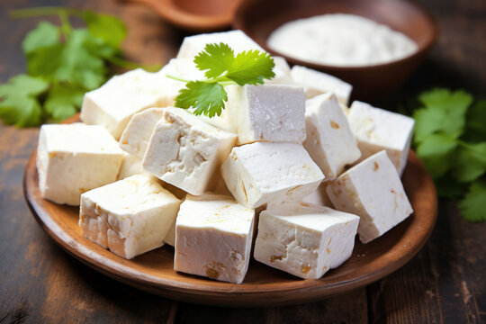

How to make Paneer

Description:
Paneer, also known as panir, is a fresh acid-set cheese common in the cuisine of the Indian subcontinent made from full-fat buffalo milk or cow milk.
Ingredients:
Steps
- Pour milk into a pan
- Heat the milk on simmer
- Bring milk upto a boil
- Squeeze a tablespoon of fresh lemon juice into the milk and stir
- Continue sitrring the pot and adding small amount of lemon juice until the milk begin to clump
- Allow the milk to clump and wait until the water is seperated from the milk
- Use a strainer to drain the water and transfer Paneer into a cheese cloth
- Squeeze the cheese cloth gently to drain any additional water
- Place a weight on the cheese cloth and leave it for ~ 20 to 25 minutes until the paneer solidifes
- Cut the paneer into small cubes and use it as desired